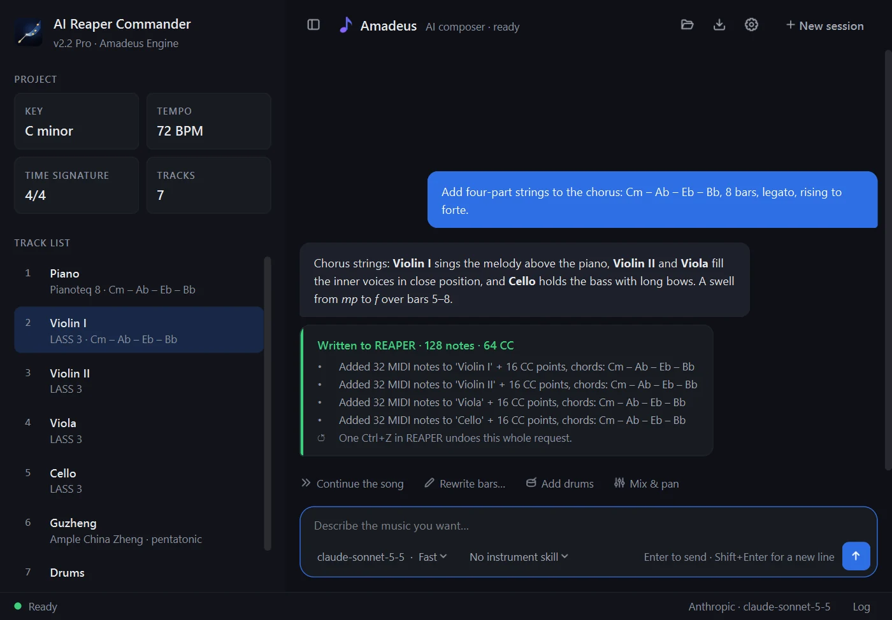

AuraLink Studio / AI Reaper Commander
Official release v2.2.0 · Windows & macOSTalk to your DAW.
It does the work.
Describe the music you want in plain words — key, tempo, instruments, chords, feeling. The assistant "Amadeus" writes it right there in REAPER: tracks, notes, dynamics, pedal and expression, the tempo and the song's sections. You keep the creative part; it takes the clicking.

A production assistant sitting inside your DAW.
Describe it in plain words
Talk to it like a session player: which key, what tempo, which instruments, how many bars, where it swells. No drawing notes one by one, no shortcuts to memorise.
A producer's ear
Every part is checked before it reaches REAPER: notes out of range, overlapping notes, flat dynamics, parallel fifths. To fix a passage, say "rewrite bars 5–8"; each request is a single Ctrl+Z.
Use your own AI
Claude, Gemini, GPT, DeepSeek — or another service such as NVIDIA NIM or OpenRouter. Try it with a free Gemini key; for whole songs, Claude Sonnet gives the best results.
Instrument skills
Pick the skill for the virtual instrument you own — Pianoteq, LASS 3, Ample Guitar & Bass, Studio Drummer, guzheng, guqin, Chinese winds… — and Amadeus writes for that library's playing style and keyswitches.
Knows the project it's in
It reads the project open in REAPER — key, tempo, tracks and the chords in every bar — so each new part fits what is already there.
Save & reopen a session
Save a whole working session and pick it up where you left off. In English, Tiếng Việt or 中文, light or dark.
You state the goal. It executes.
› Add four-part strings to the chorus: Cm – Ab – Eb – Bb, 8 bars, rising to forte.
⟳ Reading the project: C minor · 72 BPM · 7 tracks… ✓
⟳ Writing Violin I, Violin II, Viola, Cello… ✓
⟳ Checking range, voice leading, dynamics… ✓
Done. 128 notes are in REAPER — one Ctrl+Z undoes it.
Windows and macOS.
Windows 10/11 (x64) and macOS 13 or later; each download includes the REAPER installer, the guide and sample prompts. The macOS build is not notarized by Apple: the first time, open System Settings → Privacy & Security and click "Open Anyway"; Apple silicon Macs run it through Rosetta. Activate once per computer.